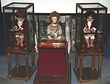

Los Autómatas de Jaquet-Droz
Bienvenido a la página "Los Automatas de Jaquet-Droz" donde encontrarás información sobre estos autómatas
contruidos desde 1768 a 1774 por relojeros muy talentosos llamados, Pierre Jaquet-Droz un célebre relojero
suizo, su hijo Henri-Louis y Jean-Frédéric Leschot. Los cuales a día de hoy siguen estando enfuncionamiento y
siendo estos considerados los predecesores remotos de la robótica moderna. A estos tres autómatas se les conoce
como:
- El Escritor
- La Pianista
- El Dibujante
Lo impresionante es que todos funcionan con mecanismos de relojería que mueven y leen unos árboles de levas en
los que van codificados los movimientos.
Los tres están en el Museo de Arte e Historia de Neuchatel y se pueden ver en funcionamiento a las 14, 5 y 16
horas del primer domingo de cada mes.
En los siguientes Indices encontrarás más información acerca de estos tres autómatas.
También puedes consultar la información aqui:
Facinantes
Automatas de Jaquet-Droz
